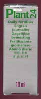

Fertlizers
WHAT ARE THE BEST LIQUID FERTILIZERS FOR THE AQUARIUM?
The last major determining factor in the health of your planted aquarium is the addition of liquid fertilizers. The amount of liquid fertilizers necessary will depend on the strength of the aquariums lighting and amount of additional co2 being used.
There are two main groups of fertilizers that will be utilized by your plants. The first is Macronutrients, these are – Nitrogen Potassium and Phosphorous. The majority of these elements occur naturally in the water and are usually supplied from fish waste, excess feeding and plant decay. With lots of plants in the aquarium there will be an inbalance of macronutrients and extra will need to be added depending on plant requirements.
The micronutrients are all the other elements used by plants that aren’t macronutrients. These are Iron Boron, Calcium, Chloride, Copper, Iron, Magnesium, Manganese, Molybdenum, Sulfur and Zinc. These can usually be dosed with commercial fertilizers. Most general commerical liquid fertilizers will contain a good ratio of these micronutrients in the necessary combination for the aquatic plants. In some cases, especially with red plants extra Iron may be needed to suffice the needs of some plants.


Seachem Flourish and NPK
- Great fertilizer products, will work well and contains all the required macro and micro nutrients. These products are expensive with continued use. However if you buy them in very large bulk containers it can become more affordable.
- Advantages- One of the leading fertilizer brands with proven results. Good macro and micro mix.
- Disadvantages- Expensive continued use.

Make your own
- If you are an experienced chemist or horticulturist you could make your own fertilizer. The primary difficulty is having a good idea of what breakdown of nutrients you want for your fertilizers. As with PMDD below it is very important to make sure the chemicals you add are not harmful to your fish and are as pure as possible. For the inexperienced PMDD (recipe instructions to come soon to AquariumInfo!) is an excellent option that has been proven to work.
- Advantages- Affordable and customized to specific aquarium.
- Disadvantages- Should be left to expert chemists, PMDD is a similar and proven method while still being affordable.

PMDD

- Yes we’ve all heard of it, the infamous Sears and Cronin recipe that struck up a storm - poor man's daily drops. PMDD definitely does work and has been proven to continually work. It will fertilize both macro and micro nutrient requirements all at once. It is extremely cheap and can be made up in a matter of minutes. So why doesn’t everyone use it? People prefer to stick to the commercial product lines and some chemicals can have hidden additives and phosphates that may contribute to algae growth. Some stores will now stock the basic dry mix at a very cheap price, be sure to ask your LFS if they supply anything like this. AquariumInfo will soon release a recipe outlining cheap common products that can be bought in your supermarket and hardware store to create PMDD!
- Advantages- Extremely cheap option that combines all dosing into one solution.
- Disadvantages- Choosing the correct chemical additives and ensuring they have no added nitrates/binders can be difficult.

Iron additives
- These fertilizers such as Seachem Flourish Iron will help your plants keep in very healthy condition. Iron additives are one of the most important micro elements utilized by your plants and greatly improves their health and growth. It will also keep red plants a bright red colour. Unless the planted aquarium has extreme requirements, iron is the only element which should need extra dosing.
- Advantages- Helps keep red plants a deep bright red. Can contribute to growth and health of all plants.
- Disadvantages- Can be expensive and timely to dose for just one micronutrient.

Dupla fertilizers

- These just like any of the above fertilizers will work great, there is a point when we can expect minimal difference between each of the commercial products. It is expected they all have similar ratios of macro and micro nutrients the plants need but products like Dupla provide the commercial trust.
- Advantages- Proven to work and can be cheaper than other commercial fertilizers.
- Disadvantages- Expensive compared to DIY options.
Takeaway
Most liquid fertilizers will provide aquatic plants with solutions of minerals and elements they need on a daily basis. From the first week of dosing there will be a visible difference in plant health,growth and plant color. Any serious planted aquascaper will want to trial a number of products and find a good median between price and impact. All aquariums respond differently to different fertilizers and it is important to use one you can trust and source regularly.